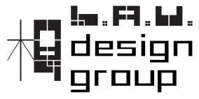

BeARTY.hk is an online platform for exhibiting art work and idea spreading. Our
goal is to establish a local art database, which encourages the public to
participate more in cultural activities to enhance the level of cultural
awareness of the general public
is a subsidiary of